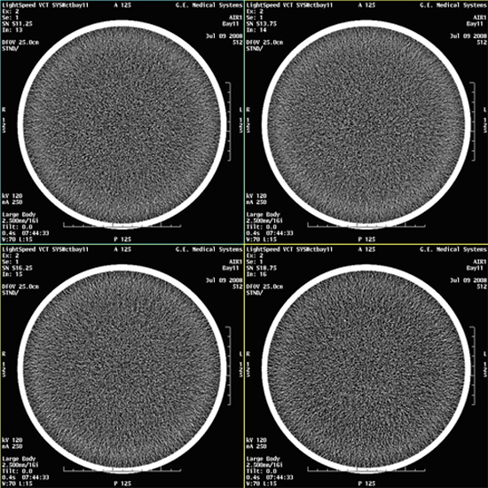
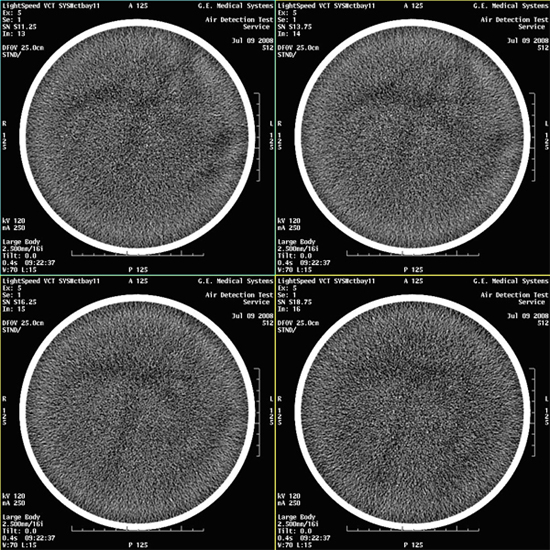
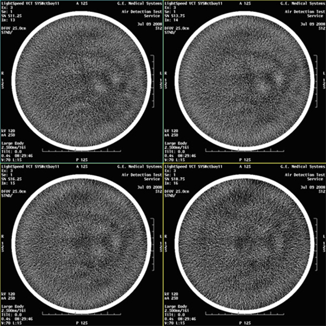

Operating Documentation
Direction 5307452-8EN, Rev# 4
Discovery CT750 HD Service Methods - Adv
Operating Documentation |
| Required Persons | Preliminary Reqs | Procedure | Finalization |
|---|---|---|---|
| 1 | 30 mins | 15 mins | Timing Not Applicable |
This document provides the necessary steps to check for image artifacts due to air in the tube oil cooling system.
| Last revised: | 16 October 2008 |
| Item | Qty | Effectivity | Part# | Manufacturer | |
|---|---|---|---|---|---|
| Phantom Holder | 1 | - | 2331933 | - | |
| Quality Assurance Phantom | 1 | - | 5128754 | - | |
| Bubble Level | 1 | - | - | - | |
| Condition | Reference | Eff |
|---|---|---|
For Performix Pro VCT 100 X-ray Tube and Performix HD X-ray Tube. | - | - |
Recommend procedure completion by trained personnel. | - | - |
No X-Ray exposures or gantry rotations have been made for AT LEAST 30 minutes. | - | - |
Move table to home longitudinal position.
Attach phantom holder to gantry end of cradle.
Mount phantom onto phantom holder.
Place bubble level on top of phantom, positioned along Z-axis. Adjust phantom holder back knob until phantom is level front to back.
Turn on laser alignment lights.
Move table into gantry until axial internal alignment lights are lined up with phantom's axial reference mark.
Adjust phantom holder side knob until sagittal internal alignment lights are lined up with phantom’s sagittal reference mark.
Elevate table until coronal internal alignment lights are lined up with the phantom’s coronal reference mark.
Set Internal Landmark.
Select [NEW PATIENT] from bottom of Scan Monitor.
| NOTE: | If a Tube Warmup Attention message box is displayed, select [OK] and skip tube warmup procedure. |
Type the following entries in the listed Patient Information fields:
Patient ID: Service
Patient Name: Air Detection Test
Select Service tab from Protocol Selection, Anatomical Selector.
Select [MANUFACTURING] , [GRDR 20CMQA VCT HD 64] from Anatomical Selector Service tab.
Modify the prescription by completing the following steps:
| NOTE: | All image groups are modified with the same values. |
Click [SCAN TYPE] .
Select [0.4] for Rotation Time and press [OK] .
Click [THICK SPEED] .
Select [40.0] for Detector Coverage (mm), [2.5 16i] for Axial Thickness (mm) & Number of Images Per Rotation and press [OK] .
Click [NO. OF IMAGES] .
Enter 16 and press [ENTER] .
Click [START LOC] .
Enter S42.5 and press [ENTER] .
Click [END LOC.] .
Enter S80 and press [ENTER] .
Click [SFOV] .
Select [LARGE BODY] .
Click [MA] .
Enter 250 for Manual mA and press [OK] .
Click [PREP GROUP (SEC)] .
Enter 15 and press [ENTER] .
Click [DFOV] .
Enter 25 and press [ENTER] .
Click [RECON OPTION] .
Enter 70 for Windows Width, 15 for Windows Level and press [OK] .
Press [CONFIRM] .
Press [MOVE TO SCAN] on SCIM when it flashes.
Press [START] on SCIM when it flashes. Scans are performed.
When all the scans are completed, click, [END EXAM] .
If a PPS Response window is displayed, click [COMPLETE] .
From [IMAGE WORKS] desktop List/Select browser, select the scanned examination and Series 1.
Select [VIEWER] and review all images for blotchy artifacts. (See Illustration 1, Illustration 2, and Illustration 3). If an artifact is encountered, perform Tube Oil Cooling System Air Removal.
| NOTE: | If air artifact exists, the air activity may be more significant in Images 13 through 16, 29 through 32, 45 through 48, and 61 through 64. |
Illustration 1: Images with No Air Artifacts

Illustration 2: Images with Marginal Air Artifacts

Illustration 3: Images with Artifacts

No finalization required.